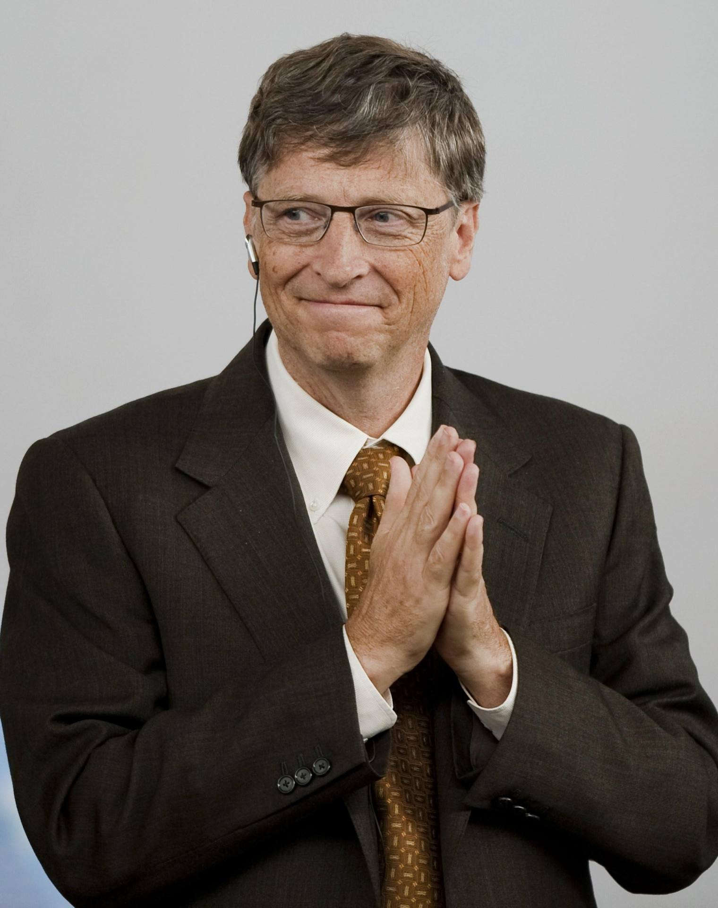
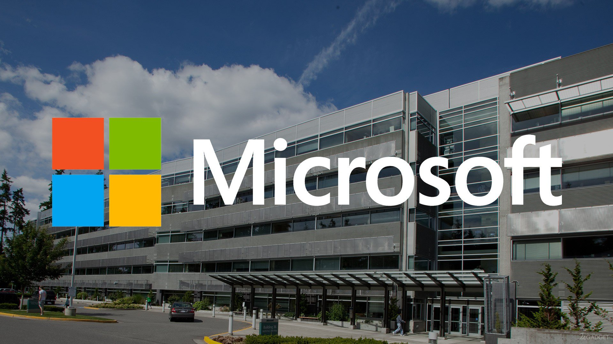
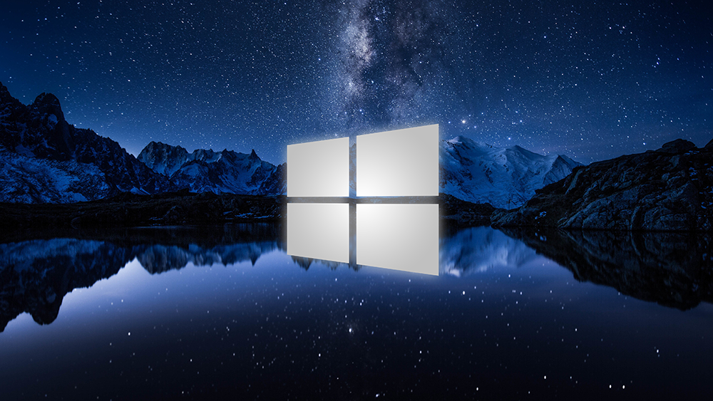

на главную
Что такое криптовалюта
Itdtech
История Билла Гейтса



Невероятная история Билла Гейтса
Австрийский психолог, психиатр и мыслитель создатель системы индивидуальной психологии Альфред Адлер сказал, что преуспевающих людей ведет по жизни стремление к превосходству. Билл Гейтс, признанный отец промышленности программного компьютерного обеспечения, является олицетворением адлеровского портрета преуспевающей личности. «Ю-Эс-Эй Тудей» пишет, что «Гейтс — это человек, который соревнуется даже в том, кто лучше устроит вечеринку, а в делах проявляет себя как решительный, боевой и безжалостный». Журнал «Инк» описывает Гейтса как «беспокойный сгусток энергии».
История успеха Билла Гейтса напоминает американскую мечту. Усиленно работая, он достиг не только процветания компании, а еще звания одного из самых богатых людей на земле. Сейчас состояние Гейтса составляет около 57 млрд. долларов списке богатейших людей мира за 2011 год, ежегодно публикуемым журналом Forbes Билл Гейтс занял второе место, с состоянием $ 56 млрд. Предлагаю Вам ознакомиться с биографией Билла Гейтса, и узнать историю его успеха.
История успеха, Биография Билла Гейтса
Детство и юность Билла Гейтса
А начиналась история успеха Билла Гейтса в городе Сиэтле штата Вашингтон чуть более полувека назад. Датой рождения Билла Гейтса является 28 октября 1955 года. Он родился в семье Вильяма Гейтса, корпоративного адвоката, и Мэри Максвелл Гейтс, члена совета директоров First Interstate Bank.
Билл Гейтс учился в самой привилегированной школе Сиэтла. Родители ожидали, что он пойдет по стопам отца и поступит в Гарвардскую школу права. Однако Гейтс не преуспевал в грамматике, граждановедении и других предметах, которые он считал тривиальными, к седьмому классу он увлекся математикой и мечтал стать профессором. В 1968 году, когда Билл и его школьный товарищ Пол Аллен учились в средних классах, руководство школы решило купить компьютерное время у компании General Electric. В то время рынком правили системы на основе микроархитектуры DEC PDP-10.
Это изменило жизнь Билла. Он и Аллен увлеклись не на шутку, они даже прогуливали занятия, чтобы изучить всю доступную компьютерную литературу. В тоже время Билл написал одну из своих первых программ — простенький симулятор, который позволял играть против машины. Руководство школы недооценило своих студентов, купленное на целый год компьютерное время было израсходовано за несколько недель. К счастью, в Лейксайд поступил новый ученик, отец которого работал главным программистом в вычислительном центре Computer Center Corporation. Новый контракт школы позволил Гейтсу и его товарищам продолжить свои эксперименты.
Малолетние хакеры быстро разобрались в тонкостях машины, нашли уязвимые места и начали доставлять неприятности – взломали защиту, несколько раз привели систему к сбоям, изменили файлы, в которых записывалась информация об используемом компьютерном времени. Заметив это, в ССС отстранили их от работы с компьютерами на несколько недель.
Тем временем бизнес компании начал страдать от постоянных сбоев и слабой защиты. Вспомнив о разрушительной деятельности компьютерщиков из Лейксайда, ССС пригласила их для выявления недоработок и брешей в безопасности. Взамен компания предложила бесконечное компьютерное время. Разумеется, Билл с товарищами не смогли отказать. Вот тогда – то они и ушли в компьютеры с головой. Время суток потеряло смысл, ребята зависали в лаборатории часами. Помимо поиска ошибок, они изучали каждый попадающийся под руку материал об автоматизированных вычислениях и совершенствовали свои навыки.
В 1969 году у Computer Center Corporation снова начались трудности, а в 1970-ом она объявила себя банкротом. Ученики Лейксайда потеряли место работы и доступ к компьютерному времени. Делать нечего, пришлось задействовать мозги в несколько ином направлении – найти новое место для самореализации. Благо отец Пола Алена в то время работал в Университете штата Вашингтон и имел доступ к вычислительному центру. Юные программисты приступили к делу – искали, где можно применить свои знания. Работа сама пришла к ним уже в 1971 году, когда компания Information Sciences наняла ребят для написания программы, которая составляла бы платёжные ведомости. Помимо неограниченного компьютерного времени работодатели согласились платить разработчикам каждый раз, когда их софт будет приносить прибыль.
Ещё одним проектом Гейтса в школьные годы стала программа для составления расписания занятий. Заложенная в неё лазейка постоянно переопределяла Билла в классы с самыми красивыми девчонками. В десятом классе Билл уже не учился компьютерному делу, а преподавал его.
Группа маленьких программистов регулярно получала заказы. Билл Гейтс, по его словам, был инициатором: «Я был тем парнем, который сказал: «Давайте позвоним реальному миру и предложим продать ему что-нибудь». И самое интересное, что действительно находил и продавал — например он разработал программу для оптимизации уличного движения и продал ее за 20 000 долларов. Это в 15 лет!
Родители были несколько напуганы таким увлечением сына и волевым решением отстранили его от компьютерных проектов. Целый год Билл не подходил к предмету своей страсти, читал биографии великих людей от Наполеона до Рузвельта. Но к семнадцати годам Гейтс получил предложение по написанию программного пакета по распределению энергии Бонневильской плотины, против работы над которым его родители уже не возражали. За годовую работу над этим проектом Гейтс получил 30 000 долларов.
Последний год обучения в Лейксайде принёс Гейтсу и Аллену новую подработку – компания TRW столкнулась с ошибкой, которую Билл и Пол в своё время нашли в компьютере Computer Center Corporation. Однако на этот раз перед ними поставили задачу совсем другого уровня – исправить ошибку. Считается, что именно в TRW Билл Гейтс начал развивать навыки программирования. Тогда же они впервые заговорили о создании софтверной компании.
В 1973 году Билл Гейтс поступил в Гарвардский университет, намереваясь дальше либо пойти по стопам отца, либо стать профессором математики. По его словам, он присутствовал там телом, но не душой. Большую часть своего пребывания в Гарварде он играл в пинбол, бридж и покер. Сколько мы знаем историй, когда вундеркинд под действием обстоятельств или окружающей среды с годами становился таким же, как все, но в отношении Билла Гейтса это правило, к счастью, не сработало. Нацеленность на победу, соревновательный дух и огромное желание сделать лучше и больше других не давали ему покоя.
Друг Гейтса, Пол Аллен неожиданно получил работу в “Ханивел” в Бостоне, и они вместе с Биллом продолжили ночные бдения над составлением программ. В 1974 году Аллен узнает о созданном компанией MITS персональном компьютере Аltair 8800. Гейтс набрался смелости и предложил компании-создателю этого компьютера новый язык программирования BASIC. Он, конечно, лукавил, что язык разработан специально для Аltair, однако программа пошла буквально с первого раза. Этот вариант устроил менеджеров, которые предложили молодым людям работать над написанием языков программирования.
Создание и развитие Microsoft
В том же году Билл Гейтс предлагает создать фирму по разработке программного обеспечения и дает ей название Microsoft (первый вариант имел написание Micro-Soft). Несмотря на кропотливую работу сотрудников, предприятие по началу испытывало определенные трудности с распространением своей продукции. Фирма не располагала достаточными средствами, чтобы нанять хорошего менеджера по сбыту, поэтому эту функцию выполняла мать Билла Гейтса.
Первые пять заказчиков Microsoft обанкротились, но ребята не отчаивались и в 1979 году возвратились в Сиэтл. В том году Билл Гейтс был отчислен из университета за прогулы и неуспеваемость, но этот факт не сильно расстроил горе-студента, поскольку ему поступило предложение от IBM создать операционную систему для первого в мире персонального компьютера.
Однако, Бил Гейтс вынужден был отказать IBM, так как не располагал на тот момент разработками для создания ОС. Поэтому глава Microsoft вынужден был рекомендовать IBM обратиться за помощью к своему конкуренту — фирме Digital Research, которая впоследствии и получит задание на разработку ОС.
Тем временем, компания Microsoft, заставив время работать на себя, покупает «сырую» операционную систему 86-DOS за $50.000, у компании Seattle Computer и приглашает на работу создателя ОС Тима Паттерсона. Компания Била Гейтса значительно доработала 86-DOS, и вскоре свет увидела MS-DOS, которую Microsoft предложил в качестве ОС для IBM PC, опередив тем самым Digital Research. В сентябре 1980 года IBM заключила с Microsoft развернутый контракт. Этому контракту предначертано было изменить историю индустрии персональных компьютеров. Оба, IBM и Microsoft, оказались в выигрыше. Спорный вопрос, кто же выиграл больше. Главный конкурент Гейтса — Digital Research — изменили направление бизнеса и больше не участвовали в соревновании (о том как развивались события можете посмотреть в биографическом фильме «Пираты силиконовой долины»).
В 1981 году Microsoft становится корпорацией, управление которой между собой разделяют Билл Гейтс и Пол Аллен. В этом же году IBM представляет свой ПК с 16-битной операционной системой MS-DOS 1.0. Кроме того, в ПО для компьютера входят и другие продукты Microsoft — BASIC, COBOL, Pascal и другие.
В этот период начинает быстро развиваться. Появляются первые представительства компании в Европе и Великобритании. В 1982 году Гейтс убеждает руководство IBM в том, что MS-DOS необходимо продавать по лицензии и другим производителям компьютеров, тем самым составив конкуренцию компании Apple, которая к тому времени продавала свои компьютеры на базе собственной ОС.
Затем Microsoft задумывается о создании операционной системы на основе графического интерфейса, который к тому времени уже имелся в распоряжении Apple. Но для начала Microsoft испытывает возможности графического интерфейса на своих программах Word и Excel, которые были разработаны специально для компьютеров Apple Macintosh.
В 1983 году Microsoft создает манипулятор Mouse (мышь) для более удобного ввода данных в компьютер с графическим интерфейсом. В этом же году корпорация представляет текстовый редактор для MS-DOS. Кроме того, компания Билла Гейтса анонсирует Windows — расширение операционной системы для MS-DOS в виде универсальной операционной среды для графических прикладных программ.
В 1986 году акции Microsoft поступают в открытую продажу. За день их стоимость на бирже повышается с 22 до 28 долларов. В марте 1990 года компания объявляет о начислении дивидендов по акциям, при этом в подарок акционеры смогли получить еще по одной акции.
Microsoft безусловно, доминирует в промышленности — ей принадлежит 44 процента прибылей всего рынка программных продуктов. Это мешает росту их ближайших конкурентов. В 1991 году Митч Кэпор, создатель конкурирующей компании Lotus сказал репортерам: “Революция закончена. Билл Гейтс победил. Нынешняя промышленность программного обеспечения — это Царство Мертвых”.
Журнал “Пипл” считает Гейтса воплощением истинного предпринимателя-инноватора. Он говорит: “Гейтс в сфере программирования значит столько же, сколько Эдисон в отношении к электрической лампочке: отчасти инноватор, отчасти предприниматель, отчасти торговец, но неизменно гений”. “Плейбой”, ко всем дифирамбам Гейтсу, в 1991 году прибавил историю, в которой “Майкрософт” упоминается как спаситель индустрии программирования. “Роль DOS как унифицированного компонента большинства ПК, помогла укрепить позиции США в качестве эпицентра мировой программной индустрии”. А журнал Forbes в апреле 1991 года поместил фотографию Гейтса на обложке и задал вопрос: “Может ли кто-нибудь остановить его?”
В 1993 году число зарегистрированных пользователей Microsoft Windows составляет 25 миллионов человек. Таким образом, Windows становится самой популярной в мире операционной системой с графическим интерфейсом. Также Microsoft выпускает Windows NT — линейку операционных систем, предназначенную для рабочих станций и серверов.
Через два года в производство была запущена ОС Windows 95. Ажиотаж, который сопутствовал продаже Windows 95, был настолько велик, что в очередях за этой операционной системой стояли даже люди, не имеющие компьютера. В январе 1996 года было продано 25 млн. копий Windows 95.
В 1996-97 годах Microsoft представляет следующие поколения Windows NT (4.0 и 5.0), которые были значительно доработаны, по сравнению с первой версией этого ПО.
В 1998 году на свет появляется Windows 98, которая внешне ничем не отличается от Windows 95, за исключением улучшенных внутренних функций. Затем выходит Windows 2000, эта программа, по мнению многих пользователей, является самой лучшей корпоративной ОС Microsoft.
Судебный иск против Microsoft
Идеологией Microsoft был и является монополизм, направленный на захват «абсолютной власти», а такие вещи в современном демократическом гражданском обществе не приветствуются, потому что все равны в правах, а свободная конкуренция — двигатель бизнеса и прогресса.
К сожалению, на фоне успеха своего предприятия топ-менеджмент Microsoft плохо понимает эти простые истины и все время стремится захватить кусок побольше, что проявляется в агрессивной маркетинговой политике. В середине 1990-х годов Microsoft начала войну с производителем интернет-браузера Netscape, потому что решила, что весь мир должен пользоваться исключительно ее собственным браузером Internet Explorer, в честь чего последний был включен в очередную версию Windows.
Здесь кончилось терпение антимонопольных органов американской власти, которые в 1998 году вчинили Microsoft серьезный иск, обвинив корпорацию в нечестном обращении с конкурентам и потребителями. Гейтса, который покинул пост гендиректора Microsoft и стал главой совета директоров и «главным программным архитектором» (название должности он придумал сам), тогда вызвали на допрос к судье Томасу Пенфилду Джексону, который в общей сложности расспрашивал его около 17 часов.Присутствовавшие на допросе люди характеризуют поведение Гейтса как уклончивое и недоброжелательное, он все время хитрил и занудствовал, придираясь к несущественным мелочам (в частности, требуя уточнения таких терминов, как «соревноваться», «спрашивать» и «мы») и отпираясь от разговоров по существу важных тем. В ответ на наиболее щекотливые вопросы Гейтс так часто говорил «я не помню», что ухмыляться начал даже сам судья. Хотя прокурорские работники отмечают — всё, что Гейтс «не помнил» (главным образом, угрозы в адрес конкурентов и нечестные бизнес-ходы), с легкостью подтверждается множеством электронных писем, которые Гейтс отсылал или получал.
Высшее руководство Microsoft в свое время обещало «загасить» и «задушить» Netscape, однако перед судом отказалось это повторить. Начатый в 1998 году процесс закончился лишь к 2002-му, корпорацию заставили платить штрафы и неустойки и изменить подходы к бизнесу. Корпорация пообещала, но в своей идеологии мало что изменила, волна судебных исков против Microsoft не прекращается и по сей день.
Другие достижения Билла Гейтса
В 2001 году в продажу поступает новая ОС Microsoft — Windows XP, которая пришлась по душе пользователям и на сегодняшний день является самой массовой операционной системой в мире. К концу 2006 году число проданных копий Windows XP составило 538 млн.
В 2004 году, Гейтс стал Инвестором, когда связал свои финансовые интересы со знаменитым Уорреном Баффетом. Они совместно организовали Berkshire Hathaway. Это компания, которая сочетает фонды Geico (автомобильное страхование), Benjamin Moore (краски) и Fruit of the Loom (текстиль). В свое время Гейтс приобрел пакет акций Bothell – биотехнологической компании. Равно как и его корпорация является своеобразным фондом, в которую инвестирует весь мир.
Спустя шесть лет после появления Windows XP в продажу поступает следующее поколение ОС Microsoft — Windows Vista и новая версия офисного пакета Microsoft Office 2007.
2 марта 2005 года кабинет иностранных дел Великобритании объявил, что Гейтс получит титул Рыцаря-Командора Превосходнейшего Ордена Британской Империи, за его вклад в предприятия Великобритании и его усилия по уменьшению нищеты в мире. Это аналог рыцарского звания, которое может получить только гражданин Соединённого Королевства, дающее право именоваться «сэр».
В июне 2007 года, спустя 34 года после поступления в Гарвард, Билл Гейтс получит диплом об окончании этого учебного заведения. Руководство одного из самых престижных университетов мира решило выдать оставившему по собственному желанию учебу в 1975 году Гейтсу диплом за особые заслуги.
Уход Гейтса из Microsoft
В начале января 2008 года, на открытии Consumer Electronics Show глава корпорации Microsoft заявил (это заявление назвали главным событием CES-2008!) о том, что в июле он покидает Microsoft. Гейтс сообщил, что намерен вплотную заняться управлением созданного в 2000 году совместно с супругой благотворительного фонда Bill & Melinda Gates Foundation, главной целью которого является поддержка проектов в сфере образования и здравоохранения. На деньги этого фонда ведутся разработки вакцины против СПИДа, создаются программы помощи, в том числе медицинской, развивающимся странам и их голодающему населению, много ресурсов тратится на образовательные и научные инициативы.
Критики Гейтса, вместе с тем, указывают, что в процентном соотношении Гейтс тратит на филантропию куда меньше, чем это принято в среде богатых людей. К тому же часть его пожертвований направляется на покупку компьютеров в школы, и выделяемые деньги включают расходы на покупку Windows и Office, то есть отправляются обратно в Microsoft.
С конца июня 2008 года Гейтс отошел от активного управления Microsoft. Свои полномочия он передал генеральному директору Стиву Балмеру, параллельно расширив зону ответственности Крейга Манди и Рэя Оззи. Именно эта «тройка» теперь определяет курс компании. Несмотря на это, Билл Гейтс не порывает с компанией насовсем. Он остается председателем Совета директоров (но без исполнительных полномочий), а также остается крупнейшим (8,7 % акций Microsoft) держателем акций корпорации.
Сложив полномочия в Microsoft, Бил Гейтс основал третью компанию «bgC3» означает Bill Gates Company Three (Третья компания Билла Гейтса). В свидетельстве о регистрации bgC3 позиционируется, как «исследовательский (научный) центр». bgC3 не является коммерческой компанией, она не будет заниматься венчурными инвестициями. В соответствии с нормативными документами, bgC3 занимается предоставлением научных и технологических услуг, работает в области аналитики и исследований, а также создает и разрабатывает программное и аппаратное обеспечение.
Несмотря на уход Гейтса, корпорация Microsoft продолжает разрабатывать новые продукты. Так, например, 22 октября 2009 года поступила в продажу ОС Windows 7, которая является преемницей Windows Vista, но обладает при этом лучшими функциональными возможностями. По данным на март 2011 года продажи операционной системы Windows 7 в мире достигли 300 млн штук!!!
Личные качества Билла Гейтса
Одной из важнейших черт характера Билла Гейтса является умение признать талант и ум другого человека. «Я не нанимаю дураков», — утверждает он. Порой Гейтс сам проводит интервью с претендентом на вакантную должность и, если необходимо, лично звонит и уговаривает нужного человека. Несмотря на то что Билл Гейтс очень ценит свое время, он понимает, что главное в бизнесе — интеллектуальный капитал. Его команда — это команда лучших умов, сильнейших программистов. Высокопрофессиональные специалисты — настоящее богатство Microsoft. Выражаясь языком теории менеджмента, Билл Гейтс является первым капиталистом интеллектуальной собственности.
Желание быть первым всегда и везде, делать что бы то ни было лучше, чем другие, — это качество присуще Биллу Гейтсу с детства. И оно принесло свои плоды — господство на мировом рынке компьютерной индустрии! Что и говорить, более чем на 80 % всех персональных компьютеров установлено программное обеспечение Microsoft — это бесспорный успех. Но Билл Гейтс, похоже, равнодушен и к нему: «Успех — плохой учитель. Он заставляет умных людей думать, что они не могут проиграть».
Прагматизм буквально во всем и упорный труд — еще одна особенность этого человека. Работать, работать и еще раз работать — такая установка является стержнем детища Билла Гейтса. Отдых он считает признаком слабости, поэтому работает много часов каждый день, поскольку убежден, что если ты стоишь на одном месте, ценность того, чего ты добился, очень быстро приходит к нулю. Где-где, а в мире компьютеров это заметнее всего. Не зря же говорят, что если ты освоил новую программу, значит, она уже устарела. Это для нас, простых пользователей, а что говорить о создателях?!
Семья и увлечения Билла Гейтса
Гейтс известен как крепкий семьянин — в 1994 году он женился на Мелинде Френч, которая стала Мелиндой Гейтс, в 1996 году у них родилась дочь Дженифер, в 1999-м — сын Рори, в 2002-м — дочь Фиби. Билл впервые встретил Мелинду в 1987 году, на каком-то пресс-брифинге “Майкрософта” в Нью-Йорке. Она, как выяснилось, уже давно работала в его компании. Мелинда оставила службу, выйдя замуж за “хозяина”. Сейчас они живут в роскошном доме вблизи Сиэтла (штаб-квартира Microsoft расположена также в пригороде Сиэтла Редмонде), земельно-имущественные налоги с которого составляют около миллиона долларов в год.
Дом напичкан различного рода электроникой. Он находится на берегу озера Вашингтон и имеет площадь в 40 тысяч квадратных футов. Стоимость дома — 40 миллионов долларов. “Дом будущего” составляют три связанных между собой павильона, изготовленных из стекла и соснового дерева. На холме — гараж на 30 автомобилей. В углу гаража стоит музейный “Мустанг” — первый автомобиль мальчишки Билла. Первый павильон — в основном для развлечения гостей. Из зала приемов открывается вид на Олимпийские горы по ту сторону озера Вашингтон. Добрых три десятка мониторов составляют плоский экран во всю стену зала. Посетитель “дома будущего” получает электронную булавку, в которой закодированы его “предпочтения” — кинофильмы, картины, музыка, телевизионные шоу. Система “узнает” ваши вкусы и запоминает их в ходе вашего первого посещения дома.
Центральный павильон — библиотека (для нее Гейтс приобрел некоторое количество различных культурных ценностей, среди которых — собрание работ Леонардо да Винчи «Codex Leicester». С 2003 года оно выставлено в Музее искуств Сиэтла). Над залом нависает гигантский купол с деревянными инкрустациями. Рядом с библиотекой — батут. Гейтс любит прыгать на нем, считая, что прыжки на батуте, равно как и раскачивание в кресле, способствуют концентрации мысли. “Дом будущего” имеет плавательный бассейн, плавно переходящий в японскую баню. Иногда по ночам Гейтс приходит расслабиться сюда со своей женой Мелиндой. Поблизости имеется также форелевое озеро. Когда начиналось строительство дома, Гейтс остановился на суровом архитектурном стиле. Но, женившись, он пошел на уступки более мягкой Мелинде. В первую очередь ее элегантному вкусу был принесен в жертву бетон. Архитекторы и строители взбунтовались, но смирились. В “доме будущего” воцарилась хозяйка настоящего.
Какой программист не любит быстрой езды?! Гейтс — лихач. Сначала у него был “Порше-911”, на котором он гонял по пустыням штата Нью-Мексико. Полу Аллену даже пришлось вызволять его из тюрьмы, куда он попал за нарушение скорости. Затем Гейтс купил “Порше-930 Турбо”, который окрестил “ракетой”. Затем последовали “Мерседес”, “Ягуар Хув”, “Порше Каррера Кабриолет-964” и, наконец, “-959”, за который он заплатил 380 тысяч долларов, но который он не мог ввезти в Америку: машина не соответствовала экологическим стандартам США. В ее отсутствие Гейтс “довольствовался” “Феррари-348”, который вскоре испортил, катаясь в дюнах. При всем при том Гейтс никогда не пользовался ремнями безопасности.
Билл Гейтс много читает, а также любит играть в гольф и бридж.
11 правил Билла Гейтса
Билл Гейтс часто посещает школы и всегда на своих выступлениях делится своим опытом и видением глобальных проблем. Каждый раз, заканчивая выступление, он говорит об 11 вещах, которым, как он считает, не научат в школе. Он говорит о том, как воспитание в духе политкорректности создало поколение детей, которые оторваны от реальности и не смогут выжить в суровом мире.